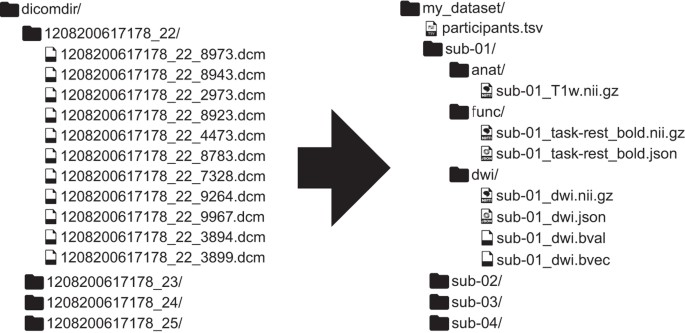
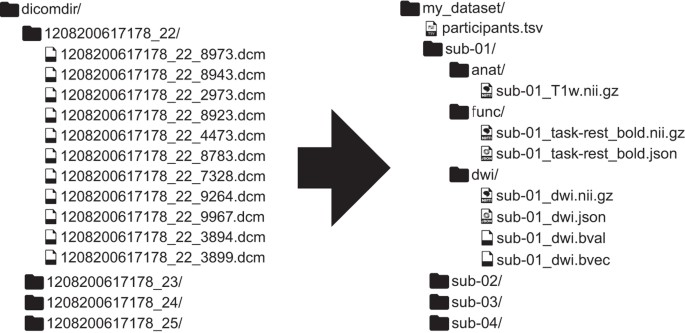

Figure 1: The pipeline used in this project for analyzing the imaging data.
This study explores brain network organization in children with Auditory Processing Disorder (APD) using resting-state fMRI data and graph theory approaches. Key findings include differences in brain hub architecture and functional connectivity between children with APD and healthy controls, particularly in regions related to auditory processing.
Problem Statement: Auditory Processing Disorder (APD) leads to difficulties in understanding speech despite normal hearing. The origins of APD symptoms are debated, with limited knowledge on the role of altered brain network topology.
Objectives: To investigate the functional brain network organization in children with APD and compare it with healthy controls using advanced neuroimaging techniques and network science approaches.
66 children (57 included) aged 8-14 years old (28 with diagnosis of APD and 29 healthy controls).
Functional MRI (rs-fMRI) data acquired by multi-echo multi-band imaging sequences.
Complex network analysis using graph theory, focusing on global and nodal network properties, and brain hub architecture.
Figure 1: The pipeline used in this project for analyzing the imaging data.
Both APD and control groups showed similar global network properties, but differences emerged in hub architecture.


Figure 2: Similar brain hub architecture and intrinsic network model in both APD and HC (Left) as shown by their global network metrics (right).
Decreased participation coefficient in auditory cortical regions (bilateral superior temporal gyrus) in children with APD, suggesting altered functional connectivity in specific brain networks.
Positive correlation between left parahippocampal gyrus connectivity and auditory perception tasks in children with APD.


Figure 3: Major differences in brain regional network in APD and HC based on network metrics.
The findings suggest that children with APD have distinct alterations in brain network topology, particularly in regions associated with auditory processing. These results provide new insights into the neural mechanisms underlying APD and highlight the potential for using advanced neuroimaging and network science approaches to further our understanding of auditory processing disorders.
This study contributes to the understanding of brain network alterations in APD, with potential implications for developing targeted interventions.
Read the article: here
Citation: Alvand et al., (2022). Altered brain network topology in children with auditory processing disorder: A resting-state multi-echo fMRI study. NeuroImage: Clinical, 35, 103139.
This study was funded by Eisdell Moore Centre and the Faculty of Science's Research fund from the University of Auckland.
In this project, a range of different approaches were used to treat the data, such as formatting 4D imaging dataset (DICOM --> NIFTI), re-arranging data structure into brain Imaging Data structure (BIDS), quality inspection for evaluating spurious data (MRIQC), evaluation of de-noising pipelines, and modeling data based on the theory of graphs and statistical analysis.
When acquiring functional MRI (fMRI) data from a scanner, the output includes a complex array of raw and processed data that captures both structural and functional aspects of the brain.

Figure 5: Demonstration of anatomical MRI data, T1-image (left) and fMRI data (right).
The raw data from the MRI scanner is typically stored in Digital Imaging and Communications in Medicine (DICOM) format. Each DICOM file contains a 2D slice of the brain, along with metadata (e.g., patient information, acquisition parameters like slice thickness, and time of acquisition).

Figure 6: Depiction of fMRI data (3D) and its time series in FSL software.
NIfTI Format: The raw DICOM files are often converted into a more standardized format, such as the Neuroimaging Informatics Technology Initiative (NIfTI) format.
 

Figure 7: Transforming DICOM images (Left) to NIFTI format (4D data point) according to BIDS structure (Right).
In order to assess the quality of each data for pre-processing, first each NIFTI data was visualized and evaluated against their quality control (QC) parameters such as FD (a measurement of how much the head moves from one frame to the next), DIVARS (derivatives of FD), etc., as well as their carpet plot (2-dimensional plot of scaled fMRI voxel intensity values).
This pipeline is written in Bash and utilizes the MRIQC (Python tool) for data quality assessment.

Figure 5: Visualized NIFTI data according to its quality measures.
After discarding data points that did not meet the QC requirement, the remaining data were processed using sequences of cleaning procedures such as image transformations, head motion correction, spatial normalization, and spatial smoothing. This procedure utilizes fMRIPrep, the neuroimaging standard pipeline for minimal image cleaning.

Figure 6: Some of the fMRI image pre-processing steps.
After minimal processing, each data point underwent further cleaning procedures to remove motion and confound signals from the fMRI signal (BOLD signal). Multiple existing de-noising pipelines were tested against efficiency and efficacy indices for accuracy performance. For example, Figure 7 highlights the highest score of ICA-AROMA+8Phs+4GSR (High QC-FC, Low QC-FC dependence) among the most popular de-noising pipelines for the project's fMRI dataset.

Figure 7: Evaluating the accuracy of de-noising pipelines.
Various complex network analysis methods were applied to the data to understand brain connectivity patterns, focusing on both global and local network properties.
Figure 8: Video demonstrating the functional MRI analysis pipeline.
Global and local network properties such as efficiency, clustering coefficient, and modularity were calculated to understand the brain’s network topology in children with APD.
Brain hubs, or highly connected regions, were identified and tested for consistency across subjects.
The stability and consistency of network connections were evaluated across APD and control groups.
Multivariate statistical analyses were performed to assess differences between APD and control groups in terms of global and local network properties.
Correlation tests were applied to examine the relationships between network metrics and behavioral performance in auditory perception tasks.